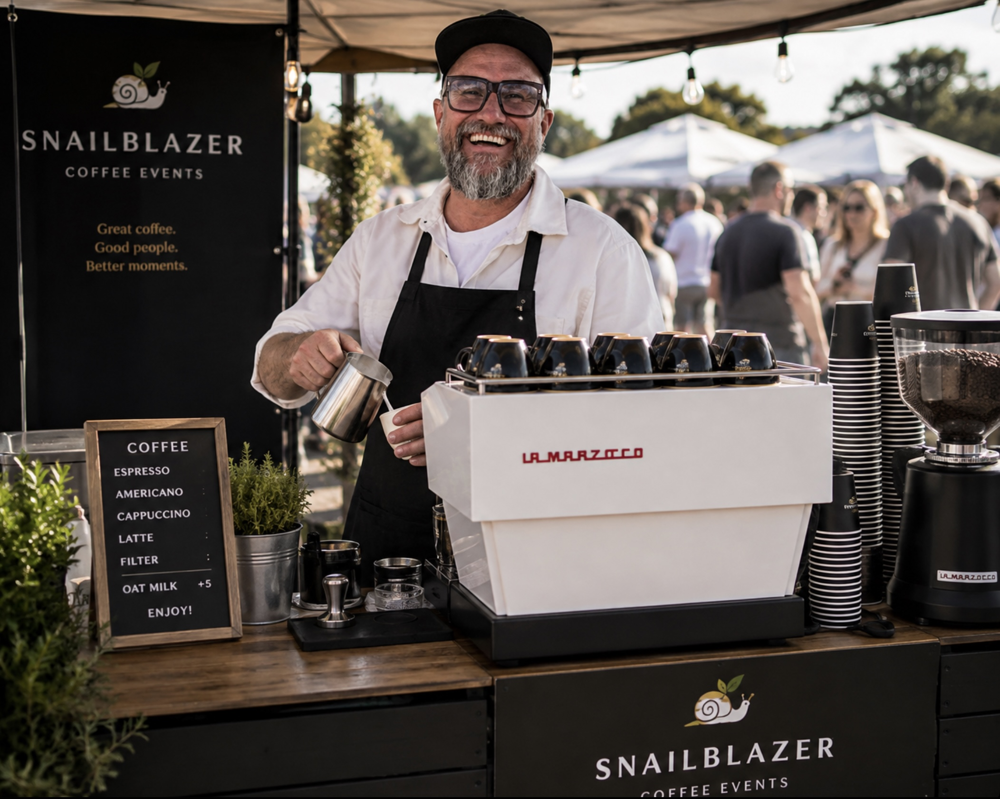
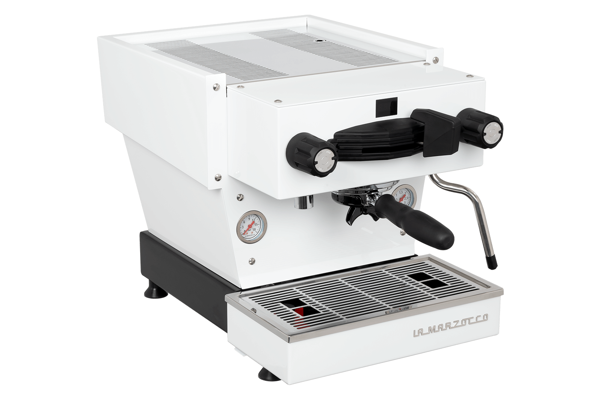

Företagsevent & kickoffs
Hyr en barista till kontoret. Bjud kollegor och kunder på en riktig kaffeupplevelse, perfekt för konferenser, kickoffs och kontorsevent i Alingsås och Göteborg.
Kaffeevent i Alingsås, Göteborg & Västsverige
Hyr en barista och en kaffevagn med La Marzocco Linea Mini R till ert nästa event: företagskickoff, bröllop, pop-up eller kaffekurs. Riktigt bra kaffe, ingen logistik för er.

Om oss
En snigel tar sig tid att göra det rätt. En blazer vågar bana ny väg. Snailblazer föddes ur den kombinationen: övertygelsen om att kaffe blir som bäst när ingen stressar fram det, men att det ändå ska kunna dyka upp precis där ni är, oavsett om det är en kontorslobby, ett marknadstält eller en bröllopsfest.
Vi tror på gott, rent och rättvist kaffe: bönor med ett ursprung vi står för, hanterat av någon som faktiskt kan sitt hantverk. Inga genvägar, ingen stress. Bara riktigt bra kaffe, tillagat med omsorg, för människor som tar sig tid att uppskatta det.
Tjänster
Boka kaffeevent till företag, fest eller marknad. Vi skräddarsyr upplevelsen efter er grupp, plats och budget.
Hyr en barista till kontoret. Bjud kollegor och kunder på en riktig kaffeupplevelse, perfekt för konferenser, kickoffs och kontorsevent i Alingsås och Göteborg.
Kaffevagn till bröllop, kalas och andra sammankomster, en mobil espressobar som ger festen ett extra lager finess.
Snailblazer på plats vid mässor, marknader och publika event i Alingsås, Göteborg och övriga Västsverige: en kaffebar som syns och smakar.
Lär er grunderna i latte art och bryggteknik i en workshop ledd av en erfaren barista.

Maskinen
Samma dubbelpannesystem och PID-styrda temperatur som proffsen använder på café, fast i format som passar vilket event som helst. En maskin byggd för hantverk och precision, skott efter skott.
Så funkar det
Skicka in formuläret med datum, plats och antal gäster. Vi återkommer med förslag och offert.
Vi bygger upp Linea Mini R på plats med allt som behövs: barista, bönor, mjölk och koppar.
Ni och era gäster får riktigt bra kaffe, tillagat med omsorg. Vi sköter resten.
Kontakt
Berätta om ert event så återkommer vi med förslag och pris, oftast inom ett par dagar.